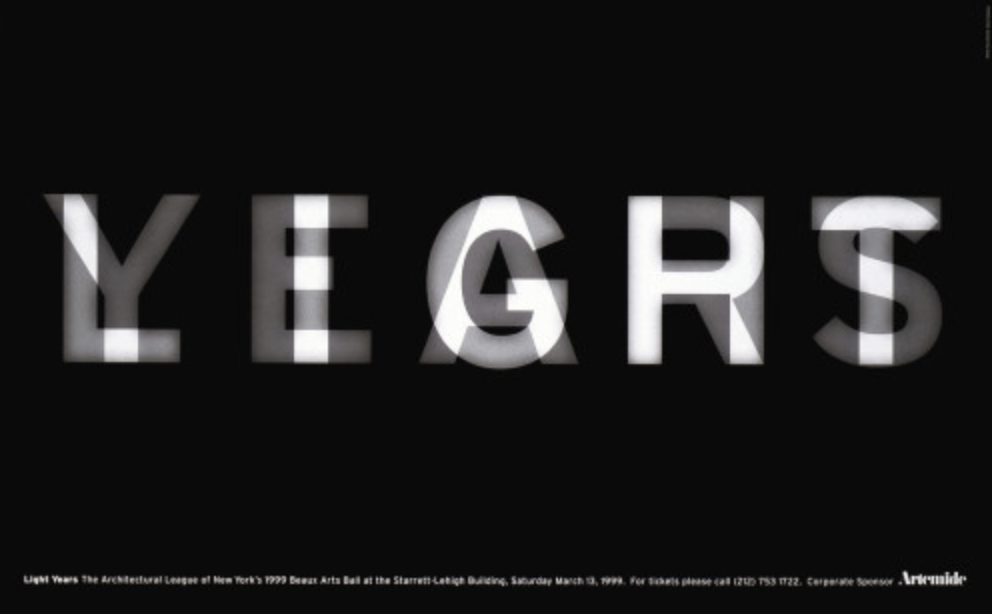
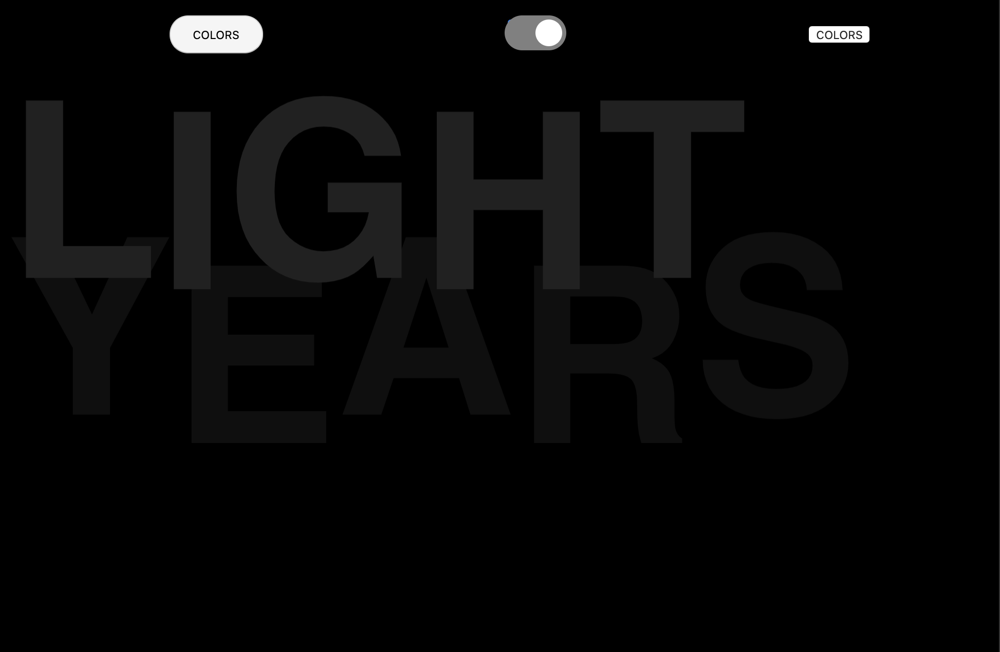
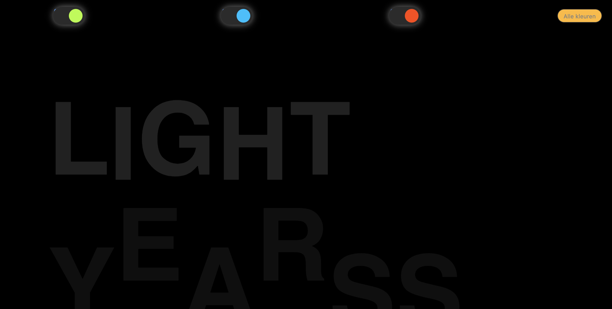
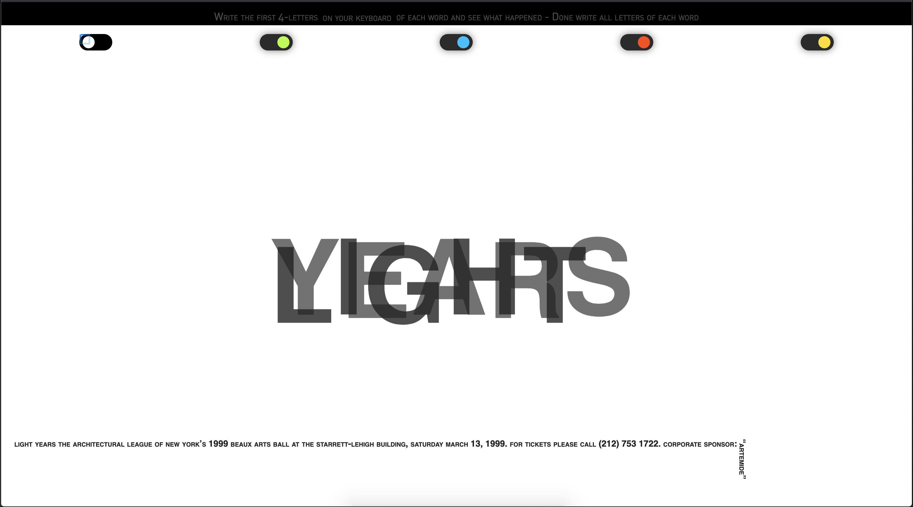

Web Animation
Een kunstwerk naar keuze om deze te visualiseren in HTML / CSS / JS. Bij dit vak was het van belang om animaties te verwerken in de onderdelen van het kunstwerk.
Week 01 - HTML verwerking
Ik de eerste week was ik zelf gaan experimenteren met HTML om de onderdelen van het kunstwerk te verwerken. In de opdracht kon er gebruik gemaakt worden van SVG-bestanden in html/css. Ik heb een kunstwerk gekozen met alleen letters dus heb ik gebruik gemaakt van paragraphs-tags i.p.v. SVG-bestanden.
Week 02 - CSS verwerking
Na alle verwerkingen in HTML was het tijd om het kunstwerk te visualiseren in CSS. In CSS heb ik veel animaties geëxperimenteerd.
 Week 03 - JS verwerking - Resultaat
In deze week moesten onderdelen van het kunstwerk gelinkt/geklikt worden. Hier heb ik gebruik gemaakt van Javascript. In de video hieronder staat het resultaat met toelichting van de onderdelen.